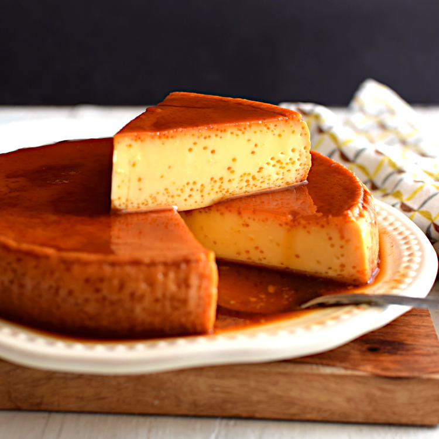

Quesillo

Description
Flan, or crème caramel, is originally a creamy Spanish custard topped with caramel. Quesillo is the Venezuelan version of this Spanish dessert. While it may seem similar, there are a few key differences. While flan uses whole eggs plus egg yolks, whole eggs are used for quesillo. In addition to that, you’ll notice that flan is a creamy custard filling, quesillo has a more spongey custard. The spongey is like the holes in cheeses, which is why it’s called quesillo (but there’s no actual cheese in this dessert!).
Ingredients
- 1 cup white sugar
- 1 (14 ounce) can sweetened condensed milk
- 1 ¾ cups milk, or as needed
- 3 eggs
- 1 teaspoon vanilla extract
Steps
- Preheat the oven to 350 degrees F (175 degrees C).
- Prepare a bain-marie, or water bath, by filling a 9-inch heat-proof container with water.
- Melt sugar in a nonstick pan over medium-low heat, stirring constantly until melted, 7 to 10 minutes; be careful to keep it from burning. Pour sugar into a flan mold, coating the sides to ensure that the egg/milk mixture in the next step will not touch the container.
- Pour sweetened condensed milk into a bowl. Fill the empty can with milk and add to the bowl; stir in eggs and vanilla extract. Blend well. Fold mixture with a spatula or tap against the counter to remove air bubbles.
- Pour milk mixture into the slightly cooled flan mold. Put the lid on and place inside the water bath; don't let the water go over the rim.
- Bake the quesillo in the bain-marie in the preheated oven for 45 minutes. Pry lid open with a knife carefully; continue baking until set, about 15 minutes more.
- Let quesillo cool to room temperature, at least 25 minutes; refrigerate 8 hours to overnight. Slide a knife around the edges of the mold to loosen and invert onto a plate.